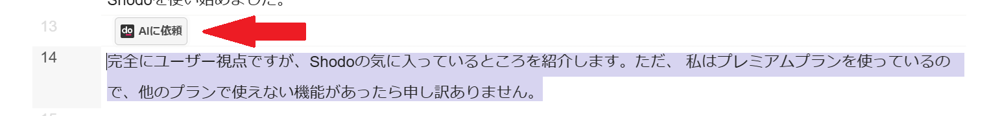
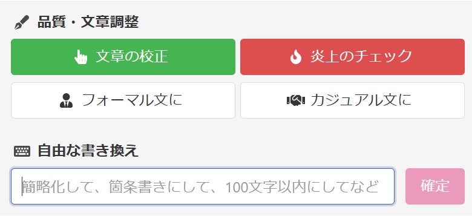
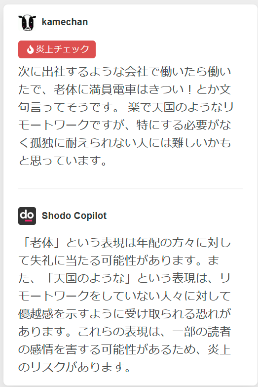
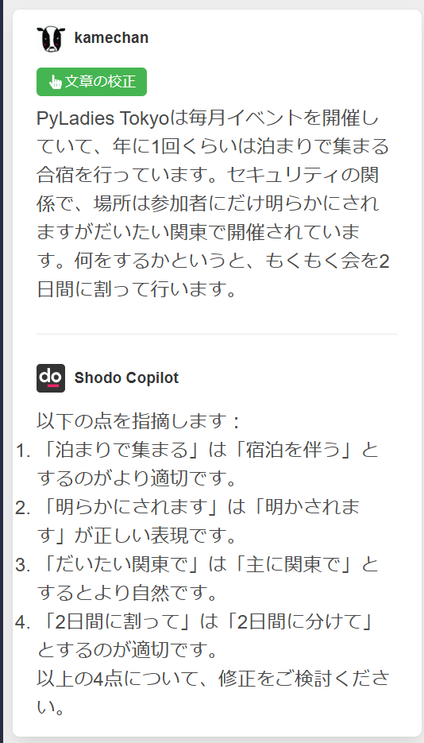
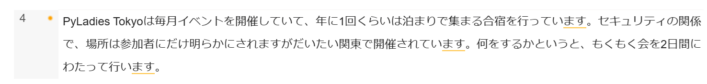

鉄は熱いうちに打て
=============================
個人ブログを書くときに寄り添ってくれるShodo¶
2024-12-16
この記事は、 AI校正Shodo Advent Calendar 2024 の16日目の記事です。 私が Shodo の便利だなと思う機能をいちファンとして紹介します。
みなさんは、ブログを書いていますか？
私は、前の会社で仕事でブログを書いていました。その時に使っていたのはShodoでした。主に他の人にレビューをしてもらうために使っていました（参照 共有リンクで外部の人にレビューしてもらう ）。GitHubのように文章の下にコメントを書けるので、どこのことを指摘しているのかがすぐに理解できてとても助かっていました。
そして月日は流れ、会社は退職したのですが今度は個人ブログを書きたくなってきました。
個人ブログを執筆する際、一人で記事を作成することが一般的です。書き終わったら、誤字脱字がないか確認して公開します。しかし、炎上を懸念することなく適切な記事を投稿するのは個人では限界があります。1つ1つは大したことがなくても何かをきっかけに過去の分を掘り起こされて問題提起されてしまうかもしれません。 まぁ一般人のチラシの裏に書いたような記事などそこまで気にしなくていいのかもしれませんが、何かに巻き込まれた場合の精神的疲労は辛いものがあります。そこで、誤字脱字の指摘や校正もしてくれるし、炎上対策もできるということで再びShodoを使い始めました。
完全にユーザー視点ですが、Shodoの気に入っているところを紹介します。ただ、 私はプレミアムプランを使っているので、他のプランで使えない機能があったら申し訳ありません。
文章をある程度書いたら、文章を選択すると AIに依頼 というボタンらしきものが出てくるので押します。
{kind=link}
そうすると、選択肢が出てきます。
{kind=link}
炎上チェック¶
何はともあれ、炎上チェックは素晴らしい機能です。世の中の炎上ネタは日々増加していて、「え？そんなの炎上するの？」と思うこともありますが、自分の精神の弱さを鑑みると炎上は避けたいのです。そんな時にこの炎上チェック機能は心に安寧をもたらしてくれます。
{kind=link}
上の例だと私は自虐で 老体 と書いていますが、この自虐が危険です。自分にならどんな悪いことも別に言ってもよいと考えがちですが、他に当てはまる人たちを傷つける可能性があります。その次のリモートワークに関して「天国のような」と書いたことが炎上につながるとは考えていませんでしたが、指摘してもらえて気が付きました。
この機能で指摘してもらうことで一回立ち止まって記事の内容を振り返ることができるのでありがたいです。
文章の校正¶
文章の校正 機能はこうしたほうがいいことを勧めてくれるので、他の人にレビューされているような効果が得られます。方言や話し言葉などの他の人に微妙に通じない文章も指摘してくれるのでありがたいです。
{kind=link}
他の機能¶
他の機能もありがたいです。 私はよく「～ます。」で文章を終わらせてしまいますが、表現が連続した場合に警告してくれるのでありがたいです。
{kind=link}
しかし警告されてもどうしたらいいのかわからないときもあります。そんなときは フォーマル文に や カジュアル文に を利用すると文章全体を書き直してくれます。そのまま使うのではなく、その文章を読んでから自分なりの文章に書き換えるとよいです。
まとめ¶
ひとりで何かを書くとどうしてもひとりよがりになってしまいますが、個人ブログを誰かにレビューしてもらうのは難しいです。そんな時に Shodo を使うといろいろな指摘をしてもらえるので助かります。これからもさらに機能が増えることを期待しつつ使っていきたいと思います。